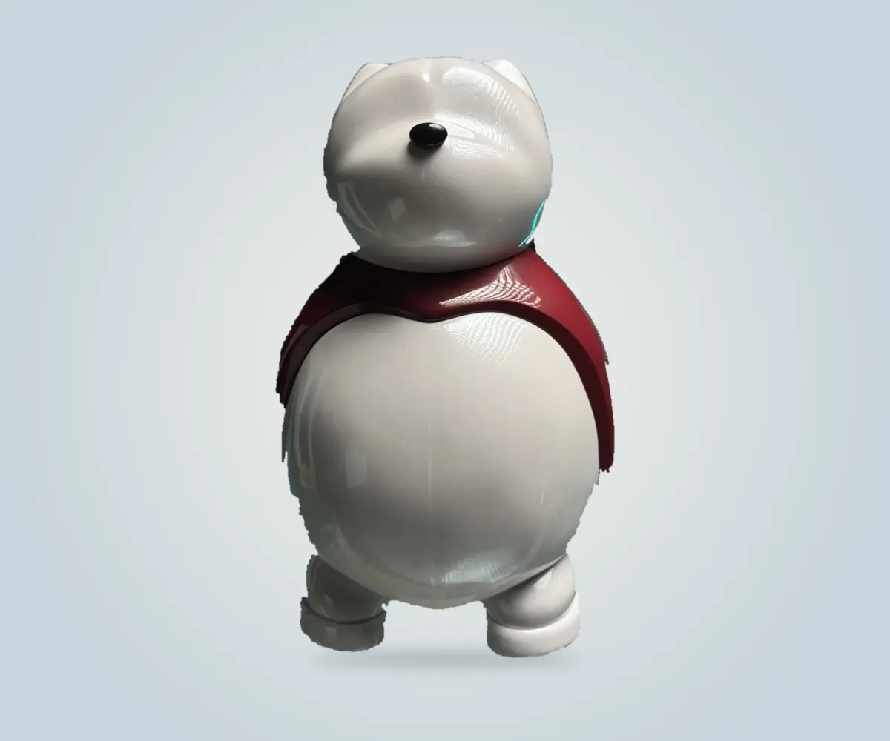
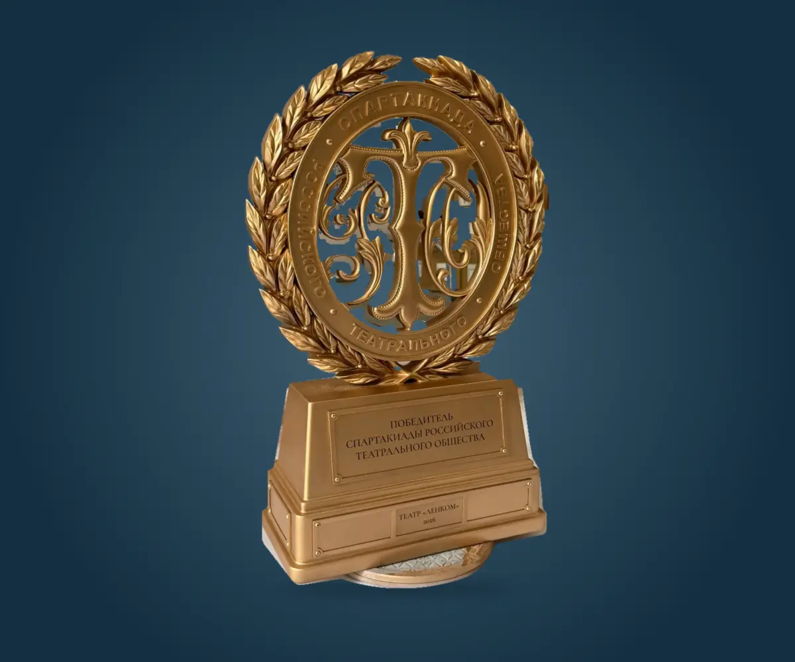
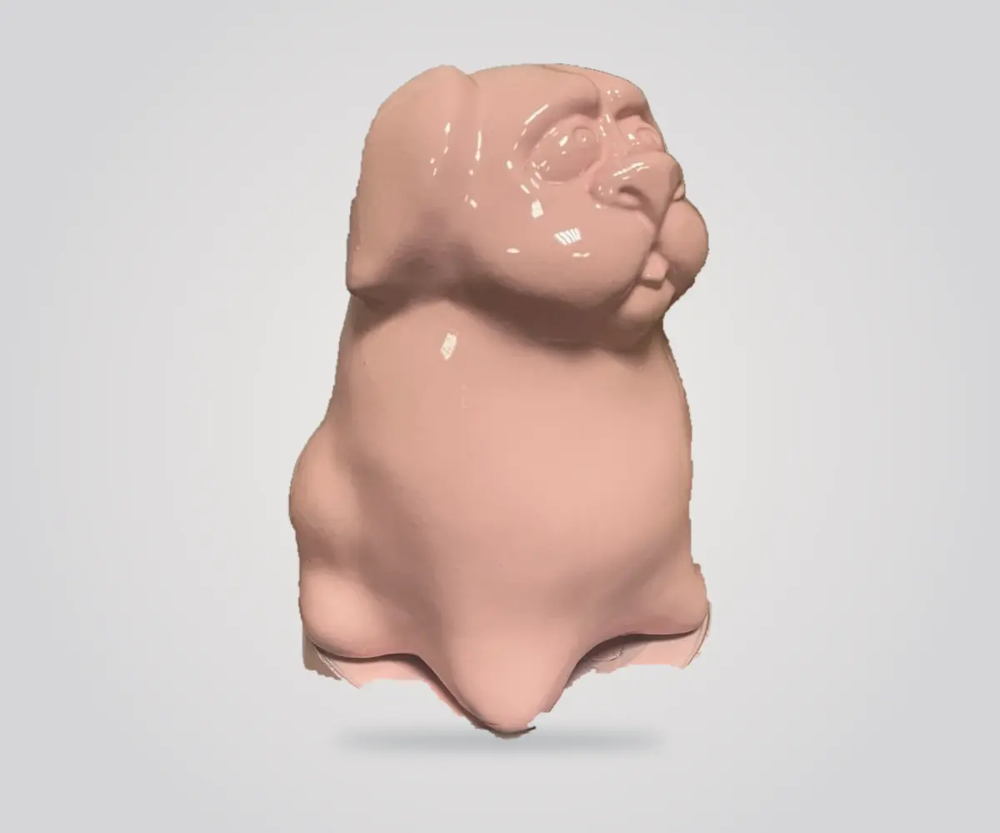
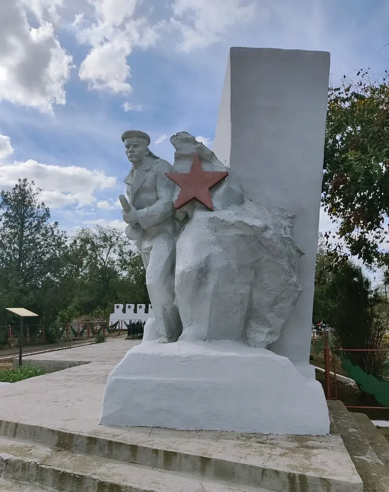
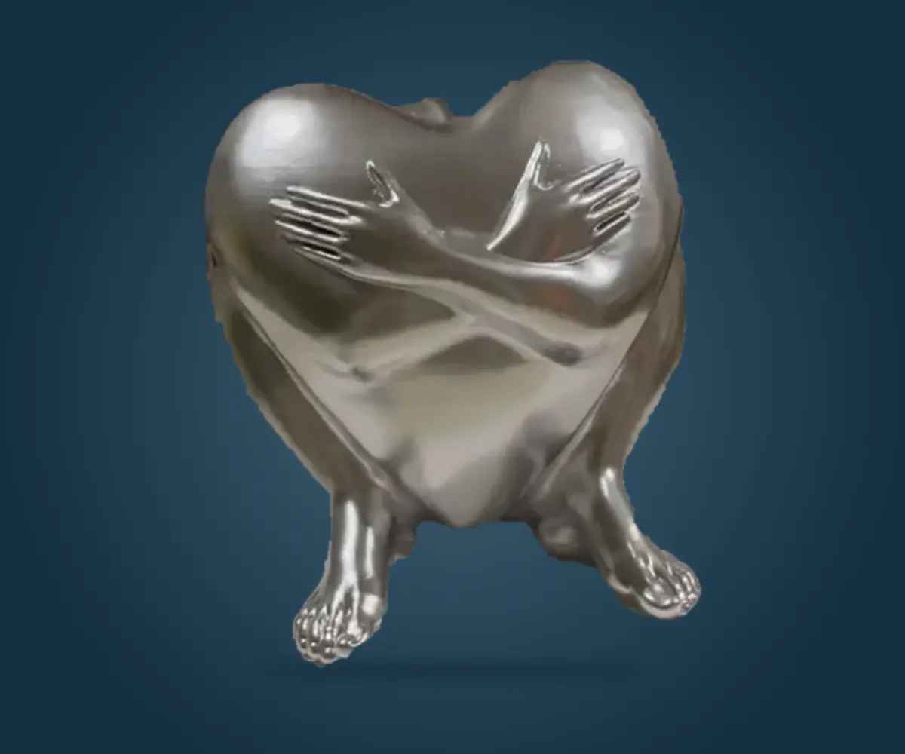
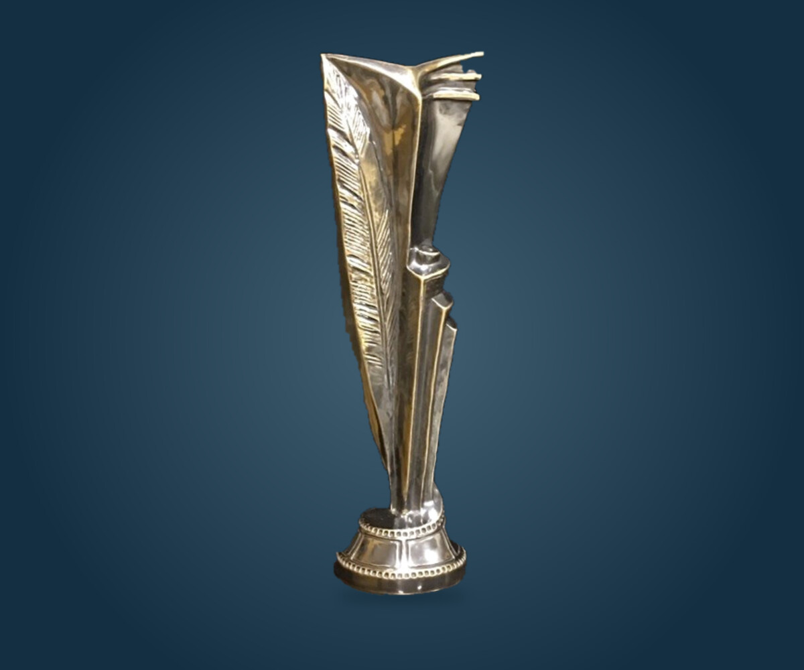
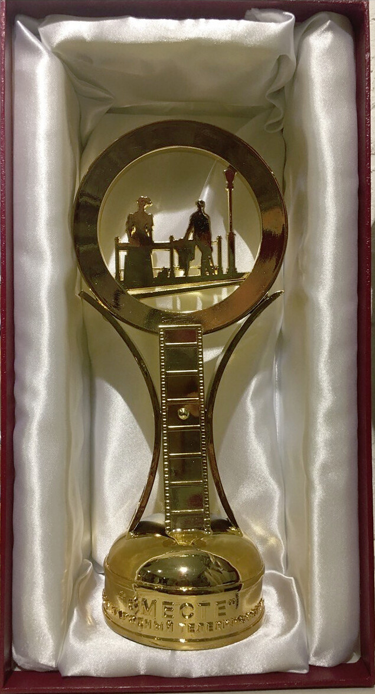
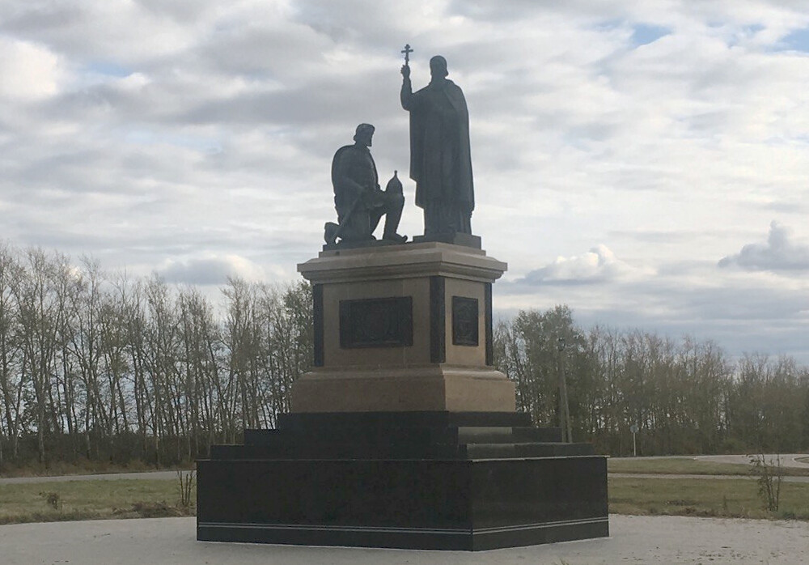
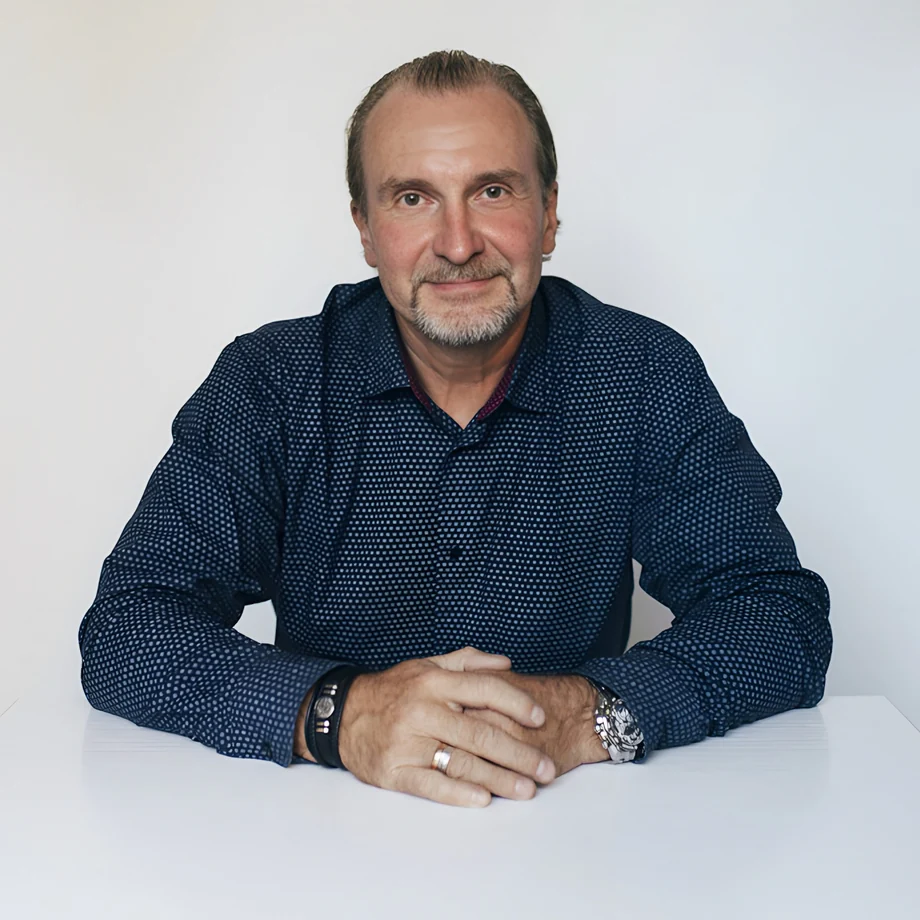
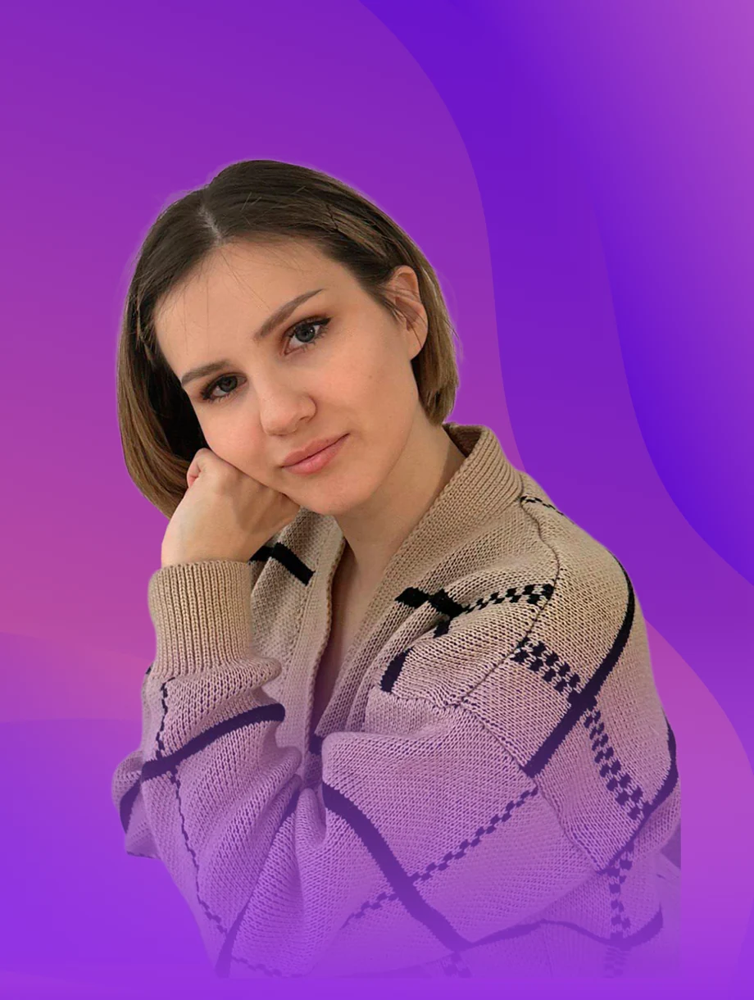

01 / НАГРАДЫ
Цифровой дизайн, серия скульптурных наград и вручение на сцене.
История проектаТворческий комбинат · Москва
Создаём скульптуры, авторские награды и выставочные макеты. Рисуем эскиз, ищем пропорции в объёме и изготавливаем предмет.
Скульптура, награды и реставрация. Фотографии, эскизы и видео из мастерской.
Скачать портфолио в PDFЦифровой дизайн, серия скульптурных наград и вручение на сцене.
История проекта
02 / СКУЛЬПТУРАЭскиз, скульптурная форма и цветовые версии одного персонажа.
История проекта
03 / НАГРАДЫОт 3D-модели и изготовления — до первого обладателя кубка.
История проекта
04 / СКУЛЬПТУРА
05 / СКУЛЬПТУРА
06 / СКУЛЬПТУРА
07 / НАГРАДЫ
08 / НАГРАДЫ
09 / СКУЛЬПТУРАВ подборке — работы из портфолио участников и STEP_3D.
Авторство и контекст указаны в карточках проектов.
Скачать фотографии · ZIP, 30 кадров ↓
ТРИФОТИ объединяет скульптуру, дизайн и цифровое производство. Мы находим выразительный образ, прорабатываем его в объёме и превращаем в настоящий предмет.
Для брендов, архитекторов, культурных проектов и людей, которым нужно что-то особенное.
Авторские персонажи, портреты, интерьерная и монументальная пластика. Ищем характер в силуэте, пропорциях и деталях.
Предметы, в которых узнаётся событие и бренд. Скульптурная форма, проработка деталей, изготовление и декоративная отделка.
Пространство с собственной интонацией. Художественная концепция, предметные акценты, панно и объекты для интерьера.
Помогаем увидеть идею в масштабе. Цифровая модель, прототип и физический макет для презентации, выставки или проверки формы.
Обсуждаем идею, назначение, масштаб и контекст. Собираем референсы и фиксируем задачу.
Результат: ясный брифРаботаем с эскизом, пластикой и пропорциями. Выбираем направление и согласуем концепцию.
Результат: концепцияСоздаём цифровую или скульптурную модель. Подбираем материал и способ изготовления.
Результат: модель и технологияИзготавливаем, собираем и доводим поверхность. Проверяем детали и готовим объект к передаче.
Результат: готовый объектХудожественная практика
встречается с инженерным мышлением.

ИСКУССТВОХудожник-скульптор
Портретная и монументальная скульптура, интерьерная пластика. Работа с образом, характером и выразительностью формы.
Профессиональная биография
ТЕХНОЛОГИИРеверсивный инжиниринг · 3D-печать
Цифровая модель и аддитивное производство. Технологическая проработка, внимание к деталям и воплощение сложной формы.
Лаборатория и проектыЭскиз, фотография, пара предложений.
Для начала достаточно замысла.
Соберите короткий бриф и передайте его команде по вашему каналу связи.
Да. Для начала достаточно описания, эскиза или фотографии. Обсудим назначение, характер объекта и детали, которые нужно уточнить.
Они зависят от масштаба, детализации, материала, количества и отделки. После обсуждения задачи определяем состав работ и согласуем расчёт.
Можно обсудить и уникальный объект, и серию. Технологию выбираем под задачу, размер, материал и количество.
Он сохраняется на вашем устройстве или копируется в буфер обмена. Передайте его команде по уже имеющемуся каналу связи.